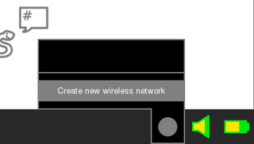
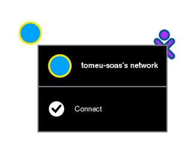

Ad-Hoc Networking
Ad-Hoc networking allows for collaboration between computers without an internet connection or without mesh network. An ad-hoc network will also allow you to collaborate and interact with computers that aren't running Sugar via Activities like Abiword and Chat.
Creating an Ad-Hoc Network
In Sugar, go to the frame by moving the mouse to a corner of the screen, or by pressing the frame key.

Click on or hover over the wireless network icon, and click "Create new wireless network".
You are now connected to your own Ad-Hoc network, and now other users can join your network and collaborate.
This computer's name is "tomeu-soas" so its network is named "tomeu-soas's network"
Connecting to someone else's Ad-Hoc Network
You can connect to an ad-hoc network from the Neighborhood View.

The color of the network will be the colors of the Sugar user who created the network. You can see information about a connection on the Frame.
Tip: To access the Neighborhood View, click on the Neighborhood Icon on the Frame or by pressing the F1 key.
Author : Ad-Hoc Networking© Tomeu Vizoso 2009
© Seth Woodworth 2009
License : Creative Commons 3.0 Attribution Share-Alike